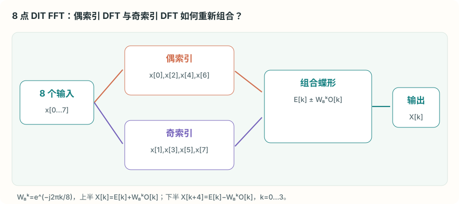
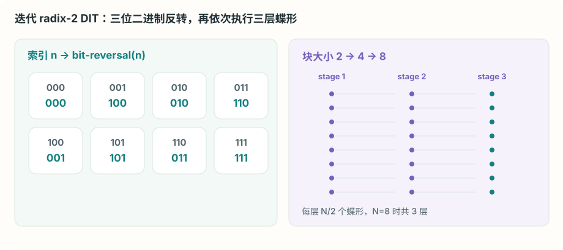

Signal · System · Insight / 08
FFT：奇偶分解、蝶形与位反转
FFT 不是另一种变换，而是对同一个 DFT 求和式的高效重排。
为什么直接 DFT 会反复计算相同的旋转因子？
一个 N 点 DFT 的每个输出 X[k] 都要对 N 个样本求和，直接计算有 N 个输出，操作数量呈 O(N²) 增长。FFT 的核心不是改变频谱，而是发现复指数权重具有周期、对称和共享结构，可以把规模为 N 的计算拆解为两份规模 N/2 的同类问题，再用极少的蝶形操作合成。
本文重点推导 基二时间抽取（radix-2 decimation-in-time, DIT），适用于 N=2ᵐ 的教学实现。它只是众多 FFT 算法中的一种；现代数值库也支持非二次幂长度，不能把 radix-2 的输入约束误写为 FFT 的数学定义。
旋转因子怎么重复利用？
在第 7 章约定下，设 W_N=e^(−j2π/N)。则 DFT 写成 X[k]=Σx[n]W_N^(kn)。旋转因子是单位圆上的 N 次单位根；重复角度在模 N 的索引上出现，让大型求和可以复用部分结果。
式（1）：指数的负号沿用正向 DFT 的约定。
它满足 W_N^(k+N)=W_N^k、W_N^(k+N/2)=−W_N^k（N 为偶数）；尤其第二个等式让一次奇偶组合同时给出两个 DFT 输出，不必为下半频点重新进行一遍子问题计算。
奇偶拆分如何导出一对蝶形输出？
把 8 个输入按索引拆成 [x0,x2,x4,x6] 与 [x1,x3,x5,x7]。两组各自做 4 点 DFT，得到 E[k] 和 O[k]，再用一个旋转因子配合加减法组合。这个思路可递归重复，直到每个子序列只含一个样本。

式（2）：0≤k
式（3）：下半频点与上半频点共享相同的两个子 DFT 结果。
这两行就是一个 radix-2 蝶形。每层大约处理 N/2 组蝶形，层数为 log₂N，因此整套计算为 O(NlogN)。注意复杂度只描述随规模增长的阶，不应声称所有库、所有 N 的实际耗时都固定为某个比例。
位反转到底是为了谁的输入顺序？
递归 DIT 会按奇偶拆分，再拆分子问题。一个常用的迭代原地 DIT 实现把这种重排预先放在输入数组上：将索引的二进制位翻转，再逐层处理长度 2、4、8 的块，最终频谱处于自然 k 顺序。
例如 N=8 时索引 1 的二进制是 001，反转为 100，即 4；索引 3 的二进制 011 变成 110，即 6。完整重排索引是 [0,4,2,6,1,5,3,7]。

为什么 FFT 与 DFT 结果应相同，却不保证逐位相同？
FFT 是 DFT 的代数分解，因此在精确算术中输出完全相同。但浮点加法不满足严格的结合律，蝶形改变了求和顺序；实际运算结果允许在合理数值容差内不同，而不是必须逐位一致。
同时确认正反变换归一化：常见的 scipy.fft.fft(x) 默认正变换不除以 N，ifft(X) 默认除以 N；norm="ortho" 则两侧按 √N 缩放。使用库时必须把自身实现与库的约定对齐。
基二算法要求 N 是 2 的幂，但混合基、Bluestein 及其他方法可以处理各种长度。SciPy 的 FFT 文档明确支持一般 n，并提供 next_fast_len 帮助选择计算效率更高的填充长度。补零可能提高 FFT 计算效率，不意味着增加真实频率分辨能力。
逐级计算一个八点 FFT
可交互推演：已完成的 FFT 蝶形层数
图为确定性计算，不是测量值。无脚本时仍能从上文的公式和静态图理解结论。
输入固定为 x=[1,2,0,0,0,0,0,0]。stage 0 是位反转后的输入存储状态；stage 1、2、3 分别完成块长 2、4、8 的迭代。图中画的是当前存储单元复数的模，不可把中间状态当作最终频谱。
from cmath import exp
from math import pi
def dft(x):
N=len(x)
return [sum(v*exp(-2j*pi*k*n/N) for n,v in enumerate(x))
for k in range(N)]
# 完整例程的 radix2_dit() 对比 1、2、4、8、16 点直接 DFT，
# 最大复数差小于 1e-10。完整程序：examples/08_fft.py，运行 python examples/08_fft.py。测试同时给出了数据与误差容差，不依赖外部包。
工程实现中还应该检查什么？
- 长度与算法：若只实现 radix-2，检测非 2 幂 N，而不是默默返回错误值。
- 方向与缩放：指数的符号、ifft 除 N 的位置、单边谱倍频规则必须统一。
- 输入输出排序：迭代 DIT 位反转通常在输入，某些 DIF 实现在输出端排列；实际库不保证暴露内部排序。
- 精度：浮点相对/绝对误差、定点缩放、溢出、缓存访问模式均会影响系统级性能。
练习：写出 N=8 时第 3 个索引反转后的二进制结果；计算一个复指数的 DFT，然后对比同一个序列的 radix-2 FFT。
延伸学习与库接口证据
- MIT OCW · Discrete-Time Signal Processing：DTFT、DFT、窗函数与 FFT 理论资料。
- SciPy · fft 参考手册：变换归一化模式及非 2 幂长度支持。
- SciPy · Fourier 变换指南：DFT/FFT 惯例、复频谱与计算实例。